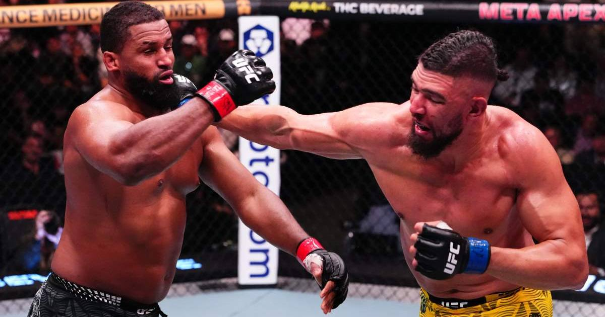

Johnny Walker TKOs Waldo Cortes-Acosta in chaotic UFC Vegas 124 main event
Johnny Walker was knocked down in the first round and lost the first two rounds on the scorecards — then landed a question-mark kick, a backfist, and a right hook to become the first man ever to knock out Waldo Cortes-Acosta, stopping him in the third round at UFC Vegas 124.

Disclosure: this post contains affiliate links. I earn a commission on qualifying purchases.
What happened
Johnny Walker just pulled off the kind of comeback that makes heavyweight MMA the most unpredictable division in the sport.
Walker (24-10 MMA, 10-7 UFC) stopped Waldo Cortes-Acosta (17-5 MMA, 10-5 UFC) by TKO at 2:27 of the third round in the main event of UFC Vegas 124 (UFC Fight Night 293) on Saturday night at the Meta APEX in Las Vegas — becoming the first man ever to knock out Cortes-Acosta.
The finish came out of nowhere, which is exactly how Walker fights. After being knocked down in the first round and losing the first two rounds on MMA Junkie's scorecards (10-9, 10-9 Cortes-Acosta), Walker uncorked a question-mark kick, followed it with a backfist, and then landed the right hook that ended the fight. Cortes-Acosta, who had never been stopped by strikes before, went down and the fight was over.
A short-notice main event that delivered
This fight almost didn't happen — at least not like this. Walker took the main event on nine days' notice after the original headliner, Sean Brady vs. Michael Morales, was canceled when Brady suffered an injury. It was Walker's second heavyweight fight, and his second heavyweight win by knockout: he beat Mick Parkin by first-round KO in October.
That is the Johnny Walker experience in a nutshell. He is chaos in human form — a light heavyweight who moved up to heavyweight and has now finished both of his fights there by knockout, in a division where one clean shot ends everything. He was losing this fight. Clearly losing it. And then he wasn't.
Cortes-Acosta's loss is his third straight, after defeats to Alexander Volkov and Curtis Blaydes. The man who had never been knocked out now has that on his record, and the man who did it was supposed to be the short-notice replacement.
The co-main
In the co-main event, Tatiana Suarez beat Virna Jandiroba by unanimous decision (30-27, 30-27, 29-28), a strong performance in a strawweight fight with title implications. Suarez controlled the fight on the scorecards, and the win keeps her firmly in the mix at 115 pounds.
What it means
Walker is now 2-0 at heavyweight with two knockouts, and he did it the hard way — taking a fight on nine days' notice, getting dropped early, and finishing a man who had never been finished by strikes. Heavyweight is a division where momentum is everything, and Walker just grabbed a fistful of it. The question now is who the UFC matches him with next, because a heavyweight who can end a fight from anywhere, at any moment, is appointment viewing — even when he's losing.
The result
Winner: Johnny Walker (24-10 MMA, 10-7 UFC)
Loser: Waldo Cortes-Acosta (17-5 MMA, 10-5 UFC)
Method: TKO (punches), Round 3, 2:27
Event: UFC Vegas 124 (UFC Fight Night 293), Meta APEX, Las Vegas
Co-main: Tatiana Suarez def. Virna Jandiroba by unanimous decision (30-27, 30-27, 29-28)
Sources
• UFC Vegas 124 results: Johnny Walker TKO's Waldo Cortes-Acosta (MMA Junkie)
• Johnny Walker wild finish Waldo Cortes-Acosta (Heavy)
Gear up: Fanatics